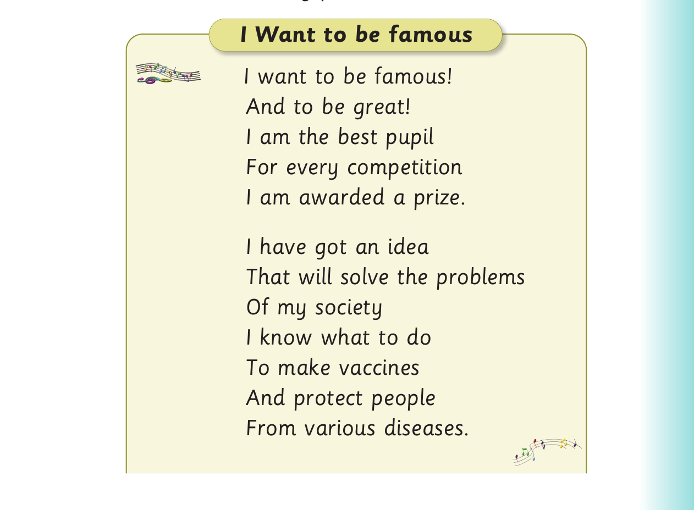
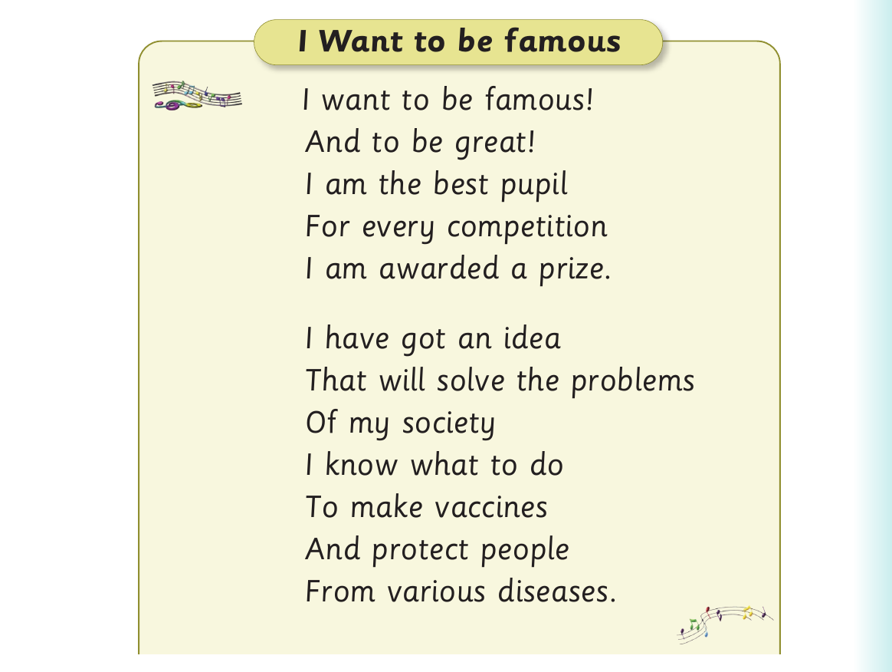

For The magic tree - questions and poem, panel 1 of 6 presents the source activity with these printed labels and instructions: Questions 1. Where did the king live?
Questions
1. Where did the king live?

For The magic tree - questions and poem, panel 2 of 6 presents the source activity with these printed labels and instructions: 2. Why did the king scream for help?
2. Why did the king scream for help?
For The magic tree - questions and poem, panel 3 of 6 presents the source activity with these printed labels and instructions: 3. Who was the first person to arrive when the king screamed?
3. Who was the first person to arrive when the king
screamed?
For The magic tree - questions and poem, panel 4 of 6 presents the source activity with these printed labels and instructions: 4. What did the king promise to be?
4. What did the king promise to be?
For The magic tree - questions and poem, panel 5 of 6 presents the source activity with these printed labels and instructions: 5. What lesson do you learn from the story?
5. What lesson do you learn from the story?
Activity 5
1. Recite the following poem:

For The magic tree - questions and poem, panel 6 of 6 presents the source activity with these printed labels and instructions: I Want to be famous I want to be famous! And to be great! I am the best pupil For every competition I am awarded a prize. I have got an idea That will solve the problems Of my society I know what to do To make vaccines And protect people From various diseases.
I Want to be famous
I want to be famous!
And to be great!
I am the best pupil
For every competition
I am awarded a prize.
I have got an idea
That will solve the problems
Of my society
I know what to do
To make vaccines
And protect people
From various diseases.
89
Poem comprehension
For Poem comprehension, panel 1 of 4 presents the source activity with these printed labels and instructions: I will work with people In my society To care for the environment To get clean air, water and space.
I will work with people
In my society
To care for the environment
To get clean air, water and space.
Source: Adapted from Hanson, S: https://parenting.firstcry.com/articles/20-best-funny-poems-for-kids/
2. Complete the following sentences using information
from the poem:
For Poem comprehension, panel 2 of 4 presents the source activity with these printed labels and instructions: (a) The speaker is awarded a prize because ______.
(a) The speaker is awarded a prize because ______.
For Poem comprehension, panel 3 of 4 presents the source activity with these printed labels and instructions: (b) The speaker can ______ to protect people.
(b) The speaker can ______ to protect people.
For Poem comprehension, panel 4 of 4 presents the source activity with these printed labels and instructions: (c) We need to care for the environment to ______.
(c) We need to care for the environment to ______.
Source for the poem: https://parenting.firstcry.com/articles/20-best-funny-poems-for-kids/Source for the poem